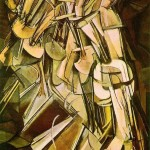
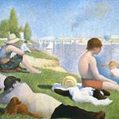
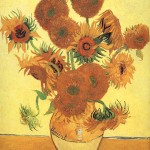

Post-Impressionism
0
Clicks
Reset

Still Life with Fruit Basket - Paul Cezanne
Les Demoiselles d'Avignon - Pablo Picasso

Girl Before a Mirror - Pablo Picasso
Nude Descending a Staircase, No. 2 - Marcel Duchamp
Arearea Aka Joyousness - Paul Gauguin

Parau Api - Paul Gauguin
Bathers at Asnières - Georges-Pierre Seurat
Sunflowers - Vincent van Gogh

Starry Night - Vincent van Gogh